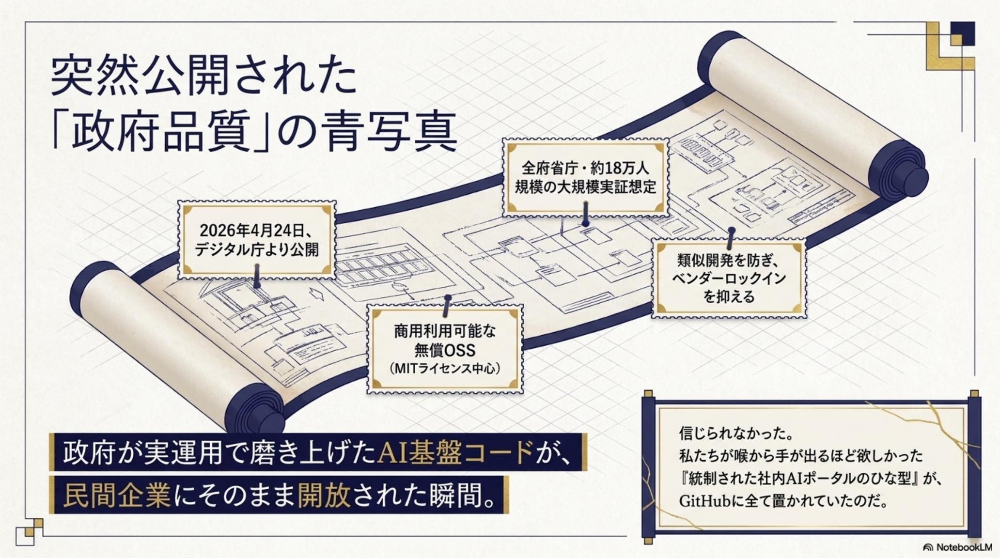
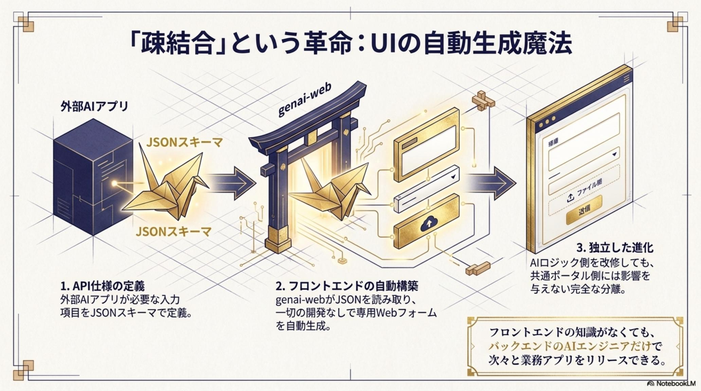

源内 / GenAI
生成AI利活用基盤 (genai-web × genai-ai-api) · 2026-04-24 公開
「シャドーAI」と
「個別開発」のあいだに、
共通の土台を。
デジタル庁が開発・運用する生成AI利活用基盤を、商用利用可能なOSSとして公開。
企業・自治体が「自社のAIポータル」をゼロから組まずに検証できる。
源内（GenAI）は、利用者が直接触る 源内Web (genai-web) と、行政実務向けの AIアプリ (genai-ai-api) という2 層の疎結合構成を採る。Web 側に SSO・監査ログ・チーム管理・AI アプリ管理を集約し、AI 機能はマイクロサービスとして JSON Schema / REST で差し替えできる。デザインシステム適用・アクセシビリティ試験・運用監視まで含めて公式に整備されている点が、汎用OSSとの違いだ。

- 源内とは何か：デジタル庁が公開した、Web ポータルと AI アプリを疎結合で組み合わせる生成AI利活用基盤の OSS。
- 何を解決しうるか：「全社AIポータルをゼロから自前実装する」前段の工数と、特定SaaSへの依存を抑える選択肢になる。
- 企業にとっての意味：共通土台として PoC 〜本番の検証コストを下げ、AI アプリ単位で安全性・モデル選択・データ連携を設計できる。
情シス・CISO が抱える「3 つのジレンマ」
生成AI 活用には需要があるが、現場任せにも自前構築にも踏み切りにくい——多くの組織が直面しているのは、「禁止」「許可」「自社開発」のどれを選んでも別のリスクが残るというトレードオフだ。
3 つのジレンマ
- 禁止しても個人判断のシャドーAI が広がりやすい
- 許可しても汎用 SaaS は社内文脈に弱く、用途を絞りづらい
- 自社開発は長期・高コストになりやすく、特定ベンダー依存も生じやすい
- 結果として、各社が非競争領域を個別に作り直す状況が続く
- 解釈「全社共通の AI ポータル」が標準化されていれば、各社の重複投資は減らせる可能性がある
共通土台で何が変わるか
- 事実 Web 層に SSO・監査ログ・チーム管理を内蔵
- 事実 AI アプリ層は REST マイクロサービスとして追加可能
- 解釈 ポータルの内製化コストを下げる選択肢になりうる
- 期待効果 シャドーAI を抑制しやすくなる運用設計が組める
- 期待効果 AI アプリ単位で差し替え・拡張がしやすい構成にできる
源内Web は「窓口」、AI アプリは「中身」
源内は「Webポータル」と「AIアプリ」を分けて設計している。Web 側は組織の窓口として共通機能を担い、AI アプリ側は業務単位のマイクロサービスとして増やしたり差し替えたりする。これにより、クラウド・モデル・データ連携を業務ごとに設計できる。

源内Web · genai-web
事実 SAML 認証、監査ログ、チーム管理、AI アプリ管理を備えた Web ポータル。事実 デジタル庁デザインシステムを適用しアクセシビリティ試験を実施。
AI アプリ · genai-ai-api
事実 行政実務用の AI アプリは生成AI を活用したマイクロサービス。事実 外部マイクロサービスを REST で源内Web に追加・実行できる。
JSON Schema × REST
事実 AI アプリ仕様を JSON Schema で記述。解釈 入出力定義に沿って Web 側 UI を生成しやすい構成と読める。
運用機能 · Ops
事実 監視・モニタリング等の運用機能追加が説明されている。解釈 商用導入前提の運用設計が想定されていると読める。
業務シナリオの一例（期待効果）：法務での契約・規程レビュー補助、議事録作成や Notion / Teams への連携など、用途別の AI アプリを並べる構成が考えられる。具体的な工数削減効果は対象業務・運用設計・評価基準に依存するため、PoC で測ることが前提となる。

利用者 → 源内Web → AI アプリ群 → クラウド／モデル／データ
3 層で考えると分かりやすい。利用者の窓口は源内Webに統一され、その奥でマイクロサービスのAIアプリがそれぞれのクラウド・モデル・データに接続される。
- SSO (SAML) 認証
- 監査ログ
- チーム管理 (組織 / 部署)
- AI アプリ管理 (公開 / 権限)
- 業務別マイクロサービス
- JSON Schema で IO 定義
- Web 側に動的追加可能
- 自社開発 / SaaS / 連携
- 同じ REST 仕様で接続
- 差し替え・拡張がしやすい
- Azure OpenAI 等
- Vertex AI / Gemini 等
- Bedrock / 自社モデル等
解釈 構造上、窓口（Web）と中身（AI アプリ）を分離しているため、AI アプリ単位でモデル・クラウド・データ連携の選択ができる。「完全に自由」ではなく、「差し替え・拡張がしやすい」と表現するのが正確。
同じ「源内」でも、立場ごとに見える価値が違う
経営・情シス／CISO・開発・現場の 4 つのレイヤーでそれぞれに対する意味を整理する。期待効果 の表現に留め、実績や保証を示すものではない。
- 非競争領域の重複投資を抑える選択肢
- 特定ベンダー一社への依存を緩和しやすい
- 全社AI活用の標準化を進めやすい
- SSO・監査ログ・RBACを Web 層で集約
- シャドーAI を抑制しやすくなる運用設計
- AI アプリ単位の公開範囲管理が可能
- Web 層と AI 層を分離して開発できる
- REST × JSON Schemaで機能追加
- OSS のためカスタマイズ・継続改善が可能
- 共通ポータル経由で AI を利用
- 業務別の専用 AI アプリを選んで使える
- 個人の汎用ツール利用に頼らずに済む
源内は「土台」であり、運用・設計・コストは各社側に残る
「OSS で公開されている」ことと「すぐに使える」ことは別だ。源内をベースに据える場合に、社内検討の前段で確認しておくとよい項目を 5 つに整理する。
SSO 連携・SAML 設定・RBAC は各社の IdP・組織構造に合わせた個別作業が必要。「設定するだけ」ではない。
API 利用料、クラウド費用、運用監視費用は別途発生する。ライセンス料の有無と総コストは別の話。
脆弱性対応、アップデート追随、内部運用責任は利用者側にも残る。SBOM やパッチ運用設計が前提。
差し替え可能にするには、データ設計・RAG 設計・評価設計（精度／回答根拠／再現性）を業務単位で組む必要がある。
監査ログがあっても、AI 出力の正確性は別の問題。人間レビュー設計・例外フロー・利用ガイドラインが併走前提。
「すごい」ではなく、「どこから検証するか」を決める
情報収集の段階を抜けて、自社で検証するために置きにいくべき4 つの作業に落とし込む。OSS であるからこそ、検証は短いサイクルで回せる。
共通の土台が公開されたことで、議論の出発点は「作るかどうか」から、「どこから検証し、どこを自社で握るか」に移る。— 源内 (GenAI) OSS 公開, 2026-04-24 デジタル庁